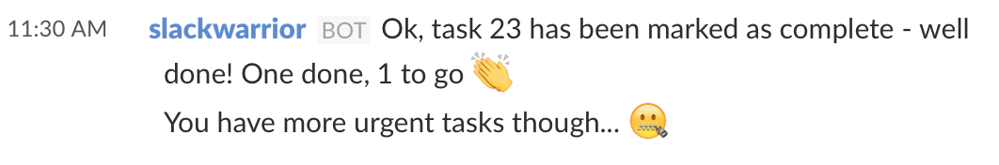

Slackwarrior Guide
Guide - Commands - Fields
Hello! Welcome
You have found our handsome and charming bot, Slackwarrior, and you want to keep track of a todo list on Slack.
So You Want To Become A Well-Organised Evil Villain using Slackwarrior:
Firstly, you’ll need to go through the onboarding process, to connect your inthe.am account to Slackwarrior. He’ll help you when you tap the 💻 computer reaction from the help menu, or DM him with onboarding to skip straight there.
Once you’ve copied and pasted your API Key to Slackwarrior, he’ll suggest that you add a new task.
Every time you want to tell Slackwarrior to do something to or with a task, you need to use the command task.
To add a task called “become evil villain”, tell Slackwarrior task add become evil villain. Then, you can use task to see your pending tasks - just the one for now.
Unfortunately, as soon as you look at this task list, you realise that becoming an evil villain will take more than a single task, so it's really a project. You still want to mark off a task as soon as possible, so you modify the task by typing task 23 modify create evil villain project to rename it "create evil villain project".
Then you task add practice maniacal laughter project:skynet to assign a project you've just invented, called skynet, to your new task "practice maniacal laughter". You can modify anything about a task once it's created, including adding or changing its assigned project.
And now that you have created an evil villain project, it's time to type task 23 done to mark your task as done. Hooray!

Slackwarrior is telling you off, though, because you have more urgent tasks waiting for you.
Taskwarrior uses a lot of metrics to determine urgency, one of which is your task's priority setting. With Slackbot, you can easily set tasks as High, Medium or Low priority with priority:H, priority:M or priority:L respectively. (Tasks will default to Low if you choose not to assign them as being higher priority).
When you're adding two or more data fields, the order after the command is not important. We can say any of the following:
task add priority:M purchase sunglasses project:skynettask add project:skynet purchase sunglasses priority:Mtask add project:skynet priority:M purchase sunglasses.
task add priority:M project:skynet purchase sunglasses so as not to follow any of the suggestions given. And while you're thinking about it, task add take ultimate extreme driving classes priority:H. It's not part of the skynet project, but you have an inkling it'll come in handy one day.
You check your tasks again with task to decide which one to work on first
and you notice that with the project, there's also a place for a tags data field. You enter one of your bucket list goals,
task add hike up to the Hollywood sign priority:H +LA, that also reminds you task add +LA priority:H find a phone book project:skynet is pretty important.
So, now your task view looks like this:
but you only have 5 minutes, so you want to check your lower urgency tasks. You type
task list
and even though it doesn't show tags or due dates, you have a good overview of everything on your plate right now.
Maniacal laughter is something you can do in 5 minutes, so you type task 24 start and let it rip. When you're done, you mark task 24 done and head out to your ultimate extreme driving class. You can check reports about time spent on tasks using Taskwarrior some other time.
When you get back, you mark task 26 done
and want to add a new task, but you sneeze and end up entering task add rubeskfjdd by mistake. You're too mad to modify the description, so you delete the task with task 29 modify status:deleted instead.
You take a deep breath and try to add your task with an important due date again with task add source titanium project:skynet priority:M +TopSecret due:"two weeks" and (task) check your top 3 tasks.
You're not going to LA until next month, so you set those two tasks to wait until then with task 28 modify wait:"next month" and task 27 modify wait:"next month" and take a break after such a busy day. Those tasks don't exist as far as Slackwarrior is concerned until that date. You can click on the hyperlink in the short ID to check on them at inthe.am.
task list and find that you only have two tasks left! You should feel proud of yourself for all this work. And now, you're an expert in all the Slackwarrior commands, and you have no reason to be disorganised and unsuccessful in your evil villain adventures. Congrats! 🎉